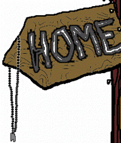

GRASS TICKLES. Crisp odors of decay bristle. Slow, long breaths. Unnecessary to open the eyes to watch for a flash or keep ears pricked for a twig snap. The sun elicits warmth from the forehead and draws color to the cheeks. It might all belong to someone else if hadn't ventured out of my dark room, the universe of words.
Here in verdant Golden Gate Park I sit back and watch a demonstration against the war. Get out of Vietnam. Bring the troops home. The speeches and chants are a peaceful burble in my mind and for the first time since I got back I sit down in public, chuckle in the shade of a maple. Black and red armies of ants battled over a cache of twigs between their respective hills, dirt headquarters. I am in my fatigue jacket, which is not so much a statement of affiliation as an inability to fit comfortably into any of the wind breakers or letter sweaters I left behind. As Mom puts it, I'm "abysmally thin."